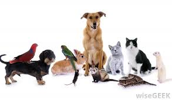

Internet jezici i alati
Budite
Deo
Rešenja
Kampanja Budite deo rešenja, a ne deo problema je nastala iz potrebe da se u cilju rešavanja problema napuštenih životinja skrene pažnja budućih i sadašnjih vlasnika na odgovorno vlasništvo, što je preduslov za rešavanje problema.
Zaštita
Tempo kojim živimo ostavlja nam jako malo slobodnog vremena da se bavimo hobijem ili da se zapitamo o nekim problemima koji su nam pred očima svaki dan, ali ih od obaveza ne primećujemo. Problem napuštenih životinja koje tumaraju ulicama svakako bi trebao da bude deo naših razmišljanja. Pomozimo im, jer je njima potrebna pomoć, a nama treba tako malo truda da bi njima ulepšali život. Sigurno šetajući ulicama sretnete bar jednu ili više napuštenih životinja na koje se sažalite ili ih jednostavno zaobiđete misleći da su one problem. Zapravo nije tako. Problem je u ljudima koji ne vode računa o svojim ljubimcima i puštajući ih na ulicu ugrožavaju život kako životinje tako i ljudi. U svakoj zemlji postoji zakon o životinjama, tako i kod nas, ali može se primetiti da se taj zakon ne sprovodi kako bi trebalo. Kada su u pitanju životinje, trebalo bi da se tom problemu posveti više pažnje, jer u ostalim zemljama u odnosu na našu, životinje imaju mnogo veća prava. Veliki je broj pasa i mačaka koje se nalaze na ulici napuštene i koje traže dom. Pomoć napuštenim životinjama najčešće pružaju udruženja za zaštitu životinja.
Pomoć im pružaju tako što ih privremeno sklanjaju u pansione koji si vrlo skupi i pokušavaju da nađu udomitelja. Udruženja svoje troškove oko zbrinjavanja pasa, njihovog lečenja ukoliko su povređeni ili ugroženi zdravstveno na bilo koji način,ili hrane, dobijaju isključivo u vidu donacija od ljudi koji su ljubitelji životinja i humanih ljudi koji ne ostanu imuni na ovaj problem. Kao pojedinci jako malo toga možete uraditi, ali ukoliko se obratimo nekom udruženju za zaštitu životinja i postanjemo njen član – volonter, sigurno radite dobru i vrlo humanu stvar.
Zašto prava životinja
Vekovima unazad ljudi zloupotrebljavaju svoju nadmoć nad drugim vrstama, kao i između sebe: trgovina robljem, etničko čišćenje, genocid, zlostavljanje žena i dece, prisilan rad dece, .... Danas se čudimo kako je nešto od ovoga ikada bilo moguće i teško uočavamo u sadašnjosti iste stereotipe, istu obespravljenost i nasilje, istu zloupotrebu moći.
Nekada su to bili „samo Indijanci“, „samo Jevreji“, a danas su to „samo beskućnici“, „samo homoseksualci“, „samo životinje“! Životinje nemaju moć govora kako bi mogle da se odbrane, zato smo tu mi, koji saosećamo, da govorimo u njihovo ime i odbranimo njihova prava.
Demokratsko društvo svoj napredak treba da iskazuje i odnosom prema životinjama i njihovom pravu na život u skladu sa uslovima opstanka vrste.